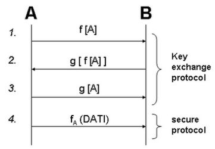

Torna alla pagina di Protocolli avanzati di rete
:: Protocolli avanzati di rete - Appunti del 19 Maggio ::
Le intercettazioni di chiamate su telefonia mobile sono semplicissime, a patto di avere l'attrezzatura giusta. Il principale problema è quindi procurarsi la strumentazione, non intercettare una volta organizzato. La stessa cosa vale per il protocollo 802.11: tutte le stazioni che si trovano nello stesso raggio di azione di un host sono virtualmente in grado di intercettare il traffico. Per questo motivo sono previste tutta una serie di precauzioni (soprattutto nella versione n del protocollo) per garantire la confienzialità del traffico, precauzioni orientate in particolar modo sulla tipologia di rete master-slave, quindi quelle con access point.
Il problema di aggiungere a un qualsiasi livello ISO/OSI un sistema di privatezza, quindi l'insieme di strumenti necessari per rendere i frame intellegibili solo dai legittimi destinatari, non è affatto banale. Una possibile soluzione potrebbe essere quella di fare sì che il protocollo aggiunga all'header dei frame informazioni utili per crittarli/decrittarli, così che l'intercettatore non riesca a interpretare il flusso dati nonostante possa disporne. Notare che oltre ai frame crittati l'attaccante potrebbe anche conoscere l'algoritmo crittografico utilizzato, ma comunque non riuscirebbe a decrittare i dati senza la chiave concordata tra mittente e destinatario. E' proprio questo il nuovo punto critico del protocollo: come concordare la chiave senza che nessun malintenzionato riesca a recuperarla? Questo problema è noto come key-exchange, e ovviamente non può essere risolto inviando la chiave attraverso lo stesso canale di comunicazione che si vuole proteggere, o tutta sta menata servirebbe un po' a un cazzo.
Nota di folklore: l'introduzione di tecniche di sicurezza in modo integrato su protocolli di rete sono recenti perché recenti sono le tecniche di condivisione delle chiavi; sistemi di sicurezza applicativa esistono invece sin dagli albori dell'informatica.
La sicurezza a livello 2 sulle reti wireless viene implementata con il key-exchange, mentre in ethernet può essere garantita utilizzando degli switch. Viene tuttavia utilizzata anche per le reti fisse, ma solo a livello 3, in cui diventa importante effettuare una crittografia di canale.
A ogni modo, cos'hanno in comune la crittografia di canale a livello 2 e a livello 3? Il fatto che devono usare la stessa rete non sicura per lo scambio delle chiavi. Il problema è stato risolto per la prima volta a livello matematico nel '76 (prima si perseguiva solo la sicurezza applicativa), mentre è stato implementato solo nei primi anni '80. Questo prima tentativo implementativo è stato il WEP (Wired Equivalent Privacy), che come dice il nome stesso aveva più a cuore l'obiettivo di ottenere lo stesso livello di privacy delle reti con cavo piuttosto che garantire il massimo della sicurezza (confidenzialità, integrità e disponibilità).
Le tecniche di scambio chiavi derivano dalla dimostrazione matematica del concetto di crittazione commutativa: se ho un oggetto A e gli applico due funzioni f e g di trasformazioni, vale la seguente proprietà:
f-1 [ g-1 [ g [ f[A] ] ] ] = A
, e dato che è commutativa alla crittazione vale anche:
g-1 [ f-1 [ g [ f[A] ] ] ] = A
Questa proprietà ci dice che posso ottenere la A applicando le funzioni inverse in qualunque ordine. La scoperta della classe di funzioni di questo tipo (che ovviamente devono essere anche robuste, cioè difficili da forzare) ha reso più sicuro lo scambio delle chiavi. Come? Con il key exchange protocol, facciamo un esempio di come funziona.
Abbiamo due stazioni A e B, e f e g sono due trasformazioni con chiave. Ecco cosa succede:

Nei dettagli:
- A invia la chiave crittata con la funzione f, ma dato che la conosce solo lui B non può farci niente
- B ricritta il tutto con la sua funzione g e invia ad A
- A decritta la sua f, mantenendo però così la crittazione di B. Osserviamo che ciò è possibile solo perché esiste la proprietà di crittazione commutativa
- B decritta con successo la chiave e con essa è possibile dare inizio al flusso dati
In tutto questo un'eventuale stazione C non riuscirebbe ad intercettare nulla che sia in chiaro, ma troverà sempre tutto crittato, fase di condivisione delle chiavi compresa. Gli attacchi avvengono quando f e g non sono abbastanza sicure, e molto della loro robustezza dipende dalla lunghezza delle chiavi; abbiamo così spostato il punto critico del protocollo nella fase di generazione delle chiavi. Se da una parte avere chiavi lunghe garantisce maggior sicurezza, dall'altra richiede un maggior tempo di esecuzione del protocollo di scambio, il che significa dare più tempo agli attaccanti per decrittare le chiavi. Capite quindi come la scelta delle dimensioni delle chiavi sia una decisione molto importante da prendere, soprattutto considerando che quella del WEP originale era così corta che bastavano circa 20 minuti per ottenere le password di tutti.
Altra nota di folklore: i certificati del browser sono le f e le g utilizzate per potersi scambiare le chiavi di sessione a livello applicativo.
Un'alternativa alla key exchange è lo scambio chiavi asimmetrico, che prevede l'utilizzo di chiavi pubbliche e private e garantisce maggior sicurezza. Il vantaggio del primo è che non richiede il coinvolgimento dell'infrastruttura PKI (Public Key Infrastructure), che non può essere usata dal livello 3 in giù.
L'access point può decidere di consentire la fase di key exchange ai soli nodi autorizzati, ad esempio a tutti i possessori di una certa password, comunicata in modo sicuro (o presunto tale) al di fuori del protocollo. La tipica tecnica utilizzata per l'autenticazione è quella del challenging o ChAP (Challenge Access Protocol):
- l'access point genera un challenge
- il PC che vuole autenticarsi lo critta con la propria password e lo rispedisce indietro
- l'access point lo decritta utilizzando come chiave la password che nel proprio database è associata a quel PC
- se ciò che ottiene è il challenge originale, allora il PC è autenticato per iniziare la fase di scambio chiavi
Un tipico attacco a questa procedura è il replay attack, in cui la macchina attaccante intercetta la challenge crittata in viaggio dal PC all'AP, la copia e la rispedisce a quest'ultimo sperando che ci caschi e autentichi anche lui. Questo attacco funziona solo se lo stesso challenge viene utilizzato per più autenticazioni, mentre se viene generato in modo casuale ogni volta tanti saluti al secchio.
Dettagli protocollo WEP
Il protocollo WEP prevede l'incapsulamento del frame, con la crittazione sia del payload che dell'header originale. Al frame incapsulato viene dunque fornito un nuovo header, che contiene informazioni per il destinatario sul come decrittarlo.
L'algoritmo di crittazione utilizzato è l'RC4, quindi a chiave simmetrica e che usa il cifrario di Vernam. Uno dei motivi per cui è scelto è che velocemente implementabile ed eseguibile in elettronica, ed ecco come funziona:
E' interessante chiedersi cosa succede se critto con lo stesso numero b due p differenti:
Cosa significa? Che se conoscessi quali coppie di p1 e p2 sono state messe in ex-or con lo stesso b, mettendo in ex-or le crittazioni corrispondenti (e se sono un intruso le so) otterrei le ex-or dei dati in chiaro! Se non vi siete persi e vi immedesimate in un attaccante, avrete capito l'importanza della proprietà.
Si potrebbe dire che siamo tranquilli perché si tratta di un evento poco frequente e che comunque non si sa quando accade, ma in realtà non è proprio così. Spesso il generatore di numeri casuali è infatti ciclico, quindi ogni tot tempo vengono riproposti gli stessi b. Trovare il periodo di questi cicli per tentativi (tantissimi, ok, ma pur sempre in numero finito) mi darebbe l'accesso al nirvana dato che potrei trovare tutte le coppie di p1 e p2 crittate con lo stesso b (e quindi gli ex-or dei frame in chiaro).
Osserviamo ora nel dettaglio come è composto un frame incapsulato:
L' IV è l' inizialization vector, un vettore variabile di 24 bit che concatenato alla chiave viene utilizzato per crittare header e payload del frame. Il suo utilizzo permette di rafforzare la chiave, dato che permette di inizializzare la funzione di generazione di b con valori sempre diversi. Infine, il fatto che sia noto a tutti, attaccanti compresi, non ha molta importanza poiché avrei bisogno di un gran numero di pacchetti con lo stesso IV perché questa informazione possa risultarmi davvero utile.
Ricollegandoci a quanto detto prima, l'utilizzo della combinazione "IV (che cambia) + chiave (che rimane uguale)" rende diventa ancora più difficile il ritrovamento di pacchetti crittati, perché fa in modo che il seme che inizializza il generatore casuale continui a cambiare. In particolare, essendo l'initialization vector di 24 bit, avremo 224 possibili combinazioni: un numero sufficiente per far rilassare gli informatici dell'epoca. In realtà i modelli probabilistici applicati al caso ci dicono che dopo soli 4823 pacchetti abbiamo il 50% di probabilità di averne due con stessa b, e non è affatto rassicurante: già nel 2001 bastavano poche ore perché il calcolatore li trovasse tutti, mentre oggi grazie a buffer più grandi e processori più performanti basterebbe mezz'ora! Ecco un altro motivo per cui il protocollo WEP nella sua versione originale non è poi considerato così sicuro.
Ultima osservazione. Abbiamo detto che se trovo due pacchetti crittati con la stessa chiave+IV e faccio una ex-or tra i due, ottengo la ex-or dei pacchetti in chiaro. Non ci siamo ancora chiesti: ma cosa me ne faccio di una ex-or di dati in chiaro? Riesco a ricostruire il messaggio da qui? Beh, se il file intercettato è un eseguibile è estremamente difficile riuscirci, mentre se è un'immagine la ricostruzione è piuttosto semplice adottando una tecnica nota come disentangle.
Torna alla pagina di Protocolli avanzati di rete